Move or edit a helix
You can move a helix, or edit the helix feature to change such things as the helix direction and creation method, or you can edit the helix profile to make changes to the sketch element used to create the helix.
Move a helix
-
Select the helix.
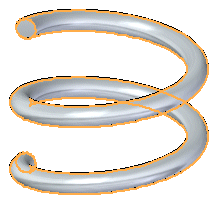
-
Click the steering wheel axis shown.
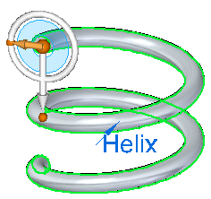
-
Drag the helix to a new location.
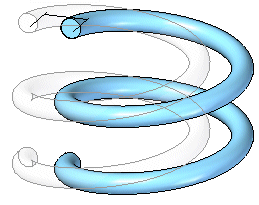
-
Click to place the helix.
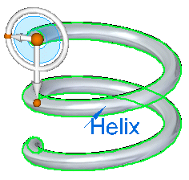
Edit a helix feature
-
Select the helix.
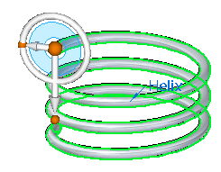
-
Click the helix edit handle.
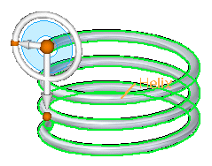
-
Click the direction handle.
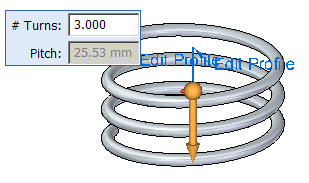
-
Right-click to change the helix direction.
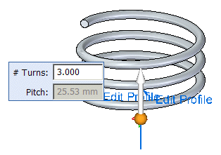
-
Click to save the edit.
Edit a helix profile
-
Select the helix.
-
Click the helix edit handle.
-
Click the edit profile handle.
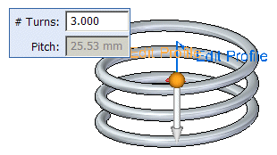
-
Click the profile.
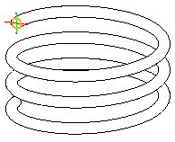
-
Change the diameter of the profile.
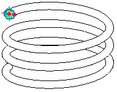
-
Click the green Accept button .
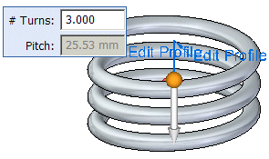
-
Right-click to change the helix diameter.
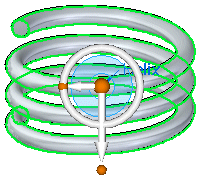
-
Click to save the edit.
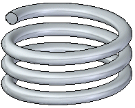
How do I
Construct a helical protrusion in the synchronous environmentConstruct a helical protrusion or cutout in the ordered environment
Construct a helical cutout
Learn more
Constructing helical featuresLook up more details
Helical Protrusion commandHelical Cutout command
Helical Cutout/Protrusion command bar
Helical command bar
Helix Options dialog box (synchronous environment)
Helix Options dialog box (ordered environment)